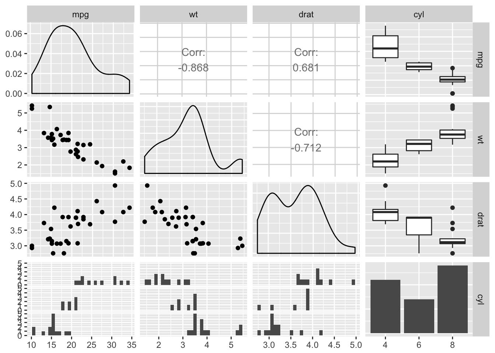

Correlations
The base R cor() function provides a simple way to get Pearson correlations, but to get a correlation matrix as you might expect from SPSS or Stata it’s best to use the corr.test() function in the psych package.
Before you start though, plotting the correlations might be the best way of getting to grips with the patterns of relationship in your data. A pairs plot is a nice way of doing this:
airquality %>%
select(-Month, -Day) %>%
pairs
If we were satisfied the relationships were (reasonably) linear, we could also visualise correlations themselves with a ‘corrgram’, using the corrgram library:
library("corrgram")
airquality %>%
select(-Month, -Day) %>%
corrgram(lower.panel=corrgram::panel.ellipse,
upper.panel=panel.cor,
diag.panel=panel.density)
Figure 5.1: A corrgram, showing pearson correlations (above the diagonal), variable distributions (on the diagonal) and ellipses and smoothed lines of best fit (below the diagnonal). Long, narrow ellipses denote large correlations; circular ellipses indicate small correlations.
The ggpairs function from the GGally package is also a nice way of plotting relationships between a combination of categorical and continuous data - it packs a lot of information into a limited space:
mtcars %>%
mutate(cyl = factor(cyl)) %>%
select(mpg, wt, drat, cyl) %>%
GGally::ggpairs()
Creating a correlation matrix
The psych::corr.test() function is a quick way to obtain a pairwise correlation matrix for an entire dataset, along with p values and confidence intervals which the base R cor() function will not provide:
mycorrelations <- psych::corr.test(airquality)
mycorrelations
Call:psych::corr.test(x = airquality)
Correlation matrix
Ozone Solar.R Wind Temp Month Day
Ozone 1.00 0.35 -0.60 0.70 0.16 -0.01
Solar.R 0.35 1.00 -0.06 0.28 -0.08 -0.15
Wind -0.60 -0.06 1.00 -0.46 -0.18 0.03
Temp 0.70 0.28 -0.46 1.00 0.42 -0.13
Month 0.16 -0.08 -0.18 0.42 1.00 -0.01
Day -0.01 -0.15 0.03 -0.13 -0.01 1.00
Sample Size
Ozone Solar.R Wind Temp Month Day
Ozone 116 111 116 116 116 116
Solar.R 111 146 146 146 146 146
Wind 116 146 153 153 153 153
Temp 116 146 153 153 153 153
Month 116 146 153 153 153 153
Day 116 146 153 153 153 153
Probability values (Entries above the diagonal are adjusted for multiple tests.)
Ozone Solar.R Wind Temp Month Day
Ozone 0.00 0.00 0.00 0.00 0.56 1.00
Solar.R 0.00 0.00 1.00 0.01 1.00 0.56
Wind 0.00 0.50 0.00 0.00 0.25 1.00
Temp 0.00 0.00 0.00 0.00 0.00 0.65
Month 0.08 0.37 0.03 0.00 0.00 1.00
Day 0.89 0.07 0.74 0.11 0.92 0.00
To see confidence intervals of the correlations, print with the short=FALSE optionOne thing to be aware of is that by default corr.test() produces p values that are adjusted for multiple comparisons in the top right hand triangle (i.e. above the diagonal). If you want the uncorrected values use the values below the diagonal (or pass adjust=FALSE when calling the function).
Working with correlation matrices
It’s important to realise that, as with all R objects, we can work with correlation matrices to continue our data ananalyses.
For example, as part of exploring your data, you might want to know whether correlations you observe in one sample are similar to those from another sample, when using the same questions. For example, let’s say we ran a survey measuring variables from the theory of planned behaviour first in students, and later in older adults:
We could run correlations for each sample separately:
corr.students <- cor(students)
corr.public <- cor(public)And we could ‘eyeball’ both of these correlation matrices and try and spot patterns or differences between them, but this is quite hard:
corr.students %>%
pander()| behaviour | intention | control | social.norm | attitude | |
|---|---|---|---|---|---|
| behaviour | 1.000 | 0.55 | 0.648 | 0.072 | 0.132 |
| intention | 0.551 | 1.00 | 0.394 | 0.298 | 0.438 |
| control | 0.648 | 0.39 | 1.000 | 0.017 | 0.014 |
| social.norm | 0.072 | 0.30 | 0.017 | 1.000 | -0.011 |
| attitude | 0.132 | 0.44 | 0.014 | -0.011 | 1.000 |
corr.public %>%
pander| behaviour | intention | social.norm | attitude | control | |
|---|---|---|---|---|---|
| behaviour | 1.00 | 0.54 | 0.282 | 0.231 | 0.141 |
| intention | 0.54 | 1.00 | 0.356 | 0.376 | 0.290 |
| social.norm | 0.28 | 0.36 | 1.000 | -0.081 | 0.010 |
| attitude | 0.23 | 0.38 | -0.081 | 1.000 | 0.049 |
| control | 0.14 | 0.29 | 0.010 | 0.049 | 1.000 |
But we could also simply subtract one matrix from the other to show the difference directly:
(corr.students - corr.public) %>%
pander()| behaviour | intention | control | social.norm | attitude | |
|---|---|---|---|---|---|
| behaviour | 0.000 | 0.013 | 0.366 | -0.159 | -0.009 |
| intention | 0.013 | 0.000 | 0.038 | -0.078 | 0.148 |
| control | 0.366 | 0.038 | 0.000 | 0.097 | 0.004 |
| social.norm | -0.159 | -0.078 | 0.097 | 0.000 | -0.059 |
| attitude | -0.009 | 0.148 | 0.004 | -0.059 | 0.000 |
Now it’s much more obvious that the behaviour/control correlation differs between the samples (it’s higher in the students).
The point here is not that this is an analysis you are likely to actually report — although you might find it useful when exploring the data and interpreting your findings.
But rather this show that a correlation matrix, in common with the results of all the statistical tests we run, are themselves just data points. We can do whatever we like with our results — storing them in data frames to display later, or process as we need.
In reality, if you wanted to test the difference in correlations (slopes) in two groups for one outcome variable you probably want to use multiple regression, and if you wanted to test a complex model like the theory of planned behaviour, you might consider CFA and/or SEM).
Tables for publication
Using apaTables
If you want to produce nice correlation tables for publication the apaTables package might be useful. This block saves an APA formatted correlation table to an external Word document like this.
Note though, that the APA table format does encourage ‘star gazing’ to some degree. Try to avoid interpreting correlation tables solely based on the significance (or not) of the r values. The pairs or corrgram plots shown above are a much better summary of the data, and are can be just as compact.
library(apaTables)
apa.cor.table(airquality, filename="Table1_APA.doc", show.conf.interval=F)
Means, standard deviations, and correlations
Variable M SD 1 2 3 4 5
1. Ozone 42.13 32.99
2. Solar.R 185.93 90.06 .35**
3. Wind 9.96 3.52 -.60** -.06
4. Temp 77.88 9.47 .70** .28** -.46**
5. Month 6.99 1.42 .16 -.08 -.18* .42**
6. Day 15.80 8.86 -.01 -.15 .03 -.13 -.01
Note. * indicates p < .05; ** indicates p < .01.
M and SD are used to represent mean and standard deviation, respectively.
By hand
If you’re not bothered about strict APA format, you might still want to extract r and p values as dataframes which can then be saved to a csv and opened in Excel, or converted to a table some other way.
You can do this by storing the corr.test output in a variable, and the accessing the $r and $p values within it.
First, we create the corr.test object:
mycorrelations <- psych::corr.test(airquality)Then extract the r values as a table:
mycorrelations$r %>%
pander()| Ozone | Solar.R | Wind | Temp | Month | Day | |
|---|---|---|---|---|---|---|
| Ozone | 1.000 | 0.348 | -0.602 | 0.70 | 0.165 | -0.013 |
| Solar.R | 0.348 | 1.000 | -0.057 | 0.28 | -0.075 | -0.150 |
| Wind | -0.602 | -0.057 | 1.000 | -0.46 | -0.178 | 0.027 |
| Temp | 0.698 | 0.276 | -0.458 | 1.00 | 0.421 | -0.131 |
| Month | 0.165 | -0.075 | -0.178 | 0.42 | 1.000 | -0.008 |
| Day | -0.013 | -0.150 | 0.027 | -0.13 | -0.008 | 1.000 |
And we can also extract p values:
mycorrelations$p %>%
pander()| Ozone | Solar.R | Wind | Temp | Month | Day | |
|---|---|---|---|---|---|---|
| Ozone | 0.000 | 0.002 | 0.000 | 0.000 | 0.56 | 1.00 |
| Solar.R | 0.000 | 0.000 | 1.000 | 0.008 | 1.00 | 0.56 |
| Wind | 0.000 | 0.496 | 0.000 | 0.000 | 0.25 | 1.00 |
| Temp | 0.000 | 0.001 | 0.000 | 0.000 | 0.00 | 0.65 |
| Month | 0.078 | 0.366 | 0.027 | 0.000 | 0.00 | 1.00 |
| Day | 0.888 | 0.070 | 0.739 | 0.108 | 0.92 | 0.00 |
Saving as a .csv is the same as for other dataframes:
write.csv(mycorrelations$r, file="airquality-r-values.csv")And can also access the CI for each pariwise correlation as a table:
mycorrelations$ci %>%
head() %>%
pander(caption="First 6 rows of the table of CI's for the correlation matrix.")| lower | r | upper | p | |
|---|---|---|---|---|
| Ozone-Slr.R | 0.173 | 0.348 | 0.50 | 0.000 |
| Ozone-Wind | -0.706 | -0.602 | -0.47 | 0.000 |
| Ozone-Temp | 0.591 | 0.698 | 0.78 | 0.000 |
| Ozone-Month | -0.018 | 0.165 | 0.34 | 0.078 |
| Ozone-Day | -0.195 | -0.013 | 0.17 | 0.888 |
| Slr.R-Wind | -0.217 | -0.057 | 0.11 | 0.496 |
Other methods for correlation
By default corr.test produces Pearson correlations, but You can pass the method argument psych::corr.test():
psych::corr.test(airquality, method="spearman")
psych::corr.test(airquality, method="kendall")